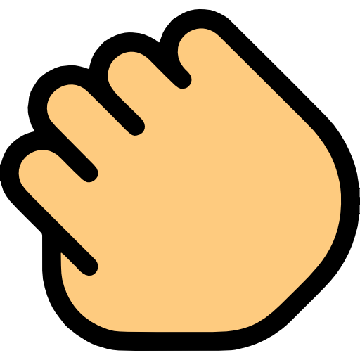

You can turn on OhMyScroll’s extension in Safari Extensions preferences.
OhMyScroll’s extension is currently on. You can turn it off in Safari Extensions preferences.
OhMyScroll’s extension is currently off. You can turn it on in Safari Extensions preferences.